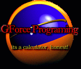

|
|
Welcome!
I am retired from the TI Calculator programming community. I do update my programs from time to time and check in on the scene, but my involvement is very minimal. I am a member of Detached Solutions. Most if not all of my software for calculators can be downloaded from my
ticalc.org author profile. As an alternative, I maintain a download folder on this site which is also current. I own a number of TI graphing calculators including a TI-86, TI-89, TI-89 Titanium, TI-92 Plus, and Voyage 200. I am the proud owner of a TI-82 signed by the staff of ticalc.org.
I also own a Norland Research Robot, and a Calculator Based Laboratory (CBL).
A Bit of History: During High School and several years during College I was actively involved in creating software for Texas Instruments graphing calculators. During this time, TI held programming contests, and I placed very well each of the three times I entered. As a result I was asked by TI to speak at the International T3 Teachers Convention in Nashville Tennessee during my sophomore year of College.
I created a range of software ranging from a m68k Disassembler to several games. I was involved with the TIGCC project, and submitted code (such as bug fixes for fopen, fclose, etc in stdio.h) and also had a hand in a variety of TSR applications having designed the code which is used as a base for nearly all Event Hooks written in C to this day on the 68k platform.
Copyright © 2000 - by Greg D. All Rights Reserved.
|
|

|
|
{kind=link}